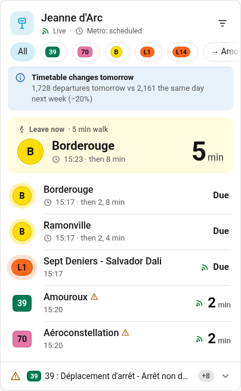
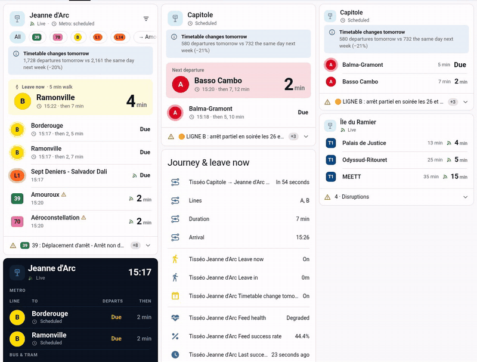
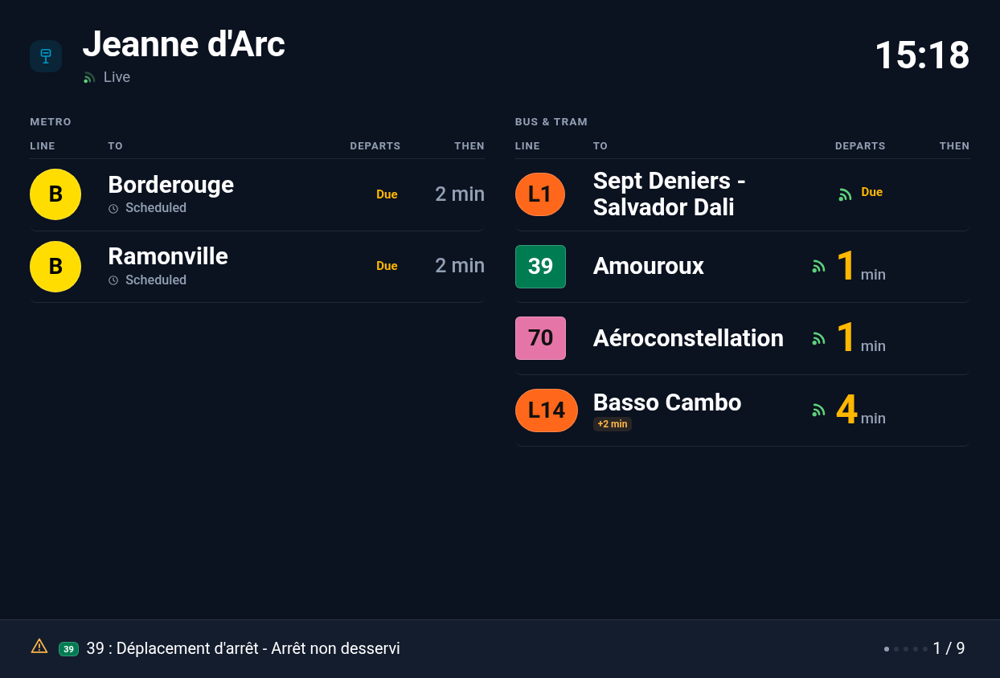
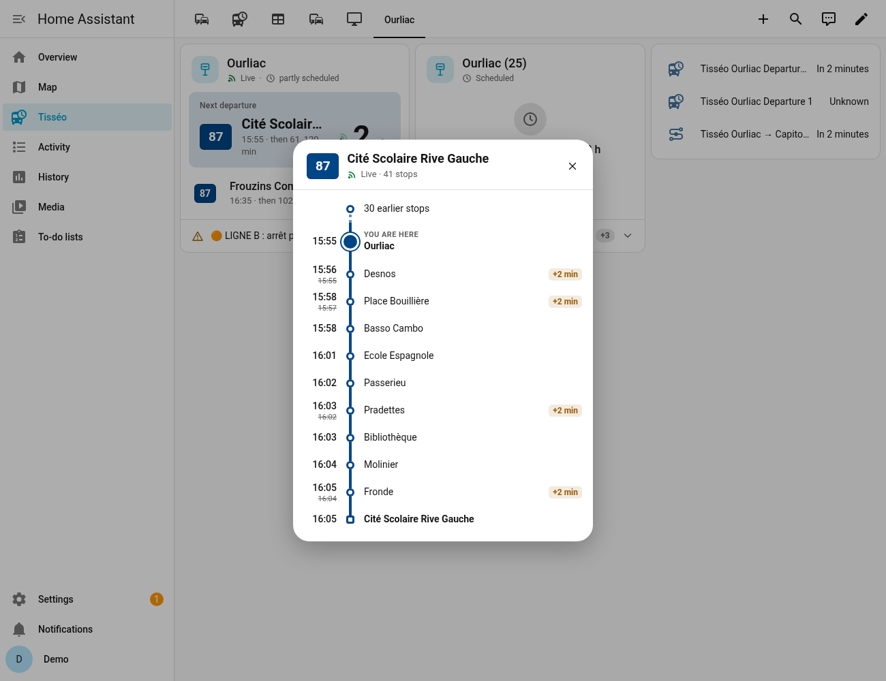
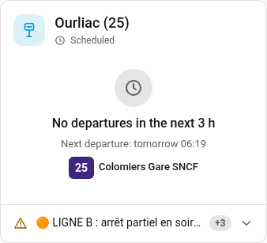
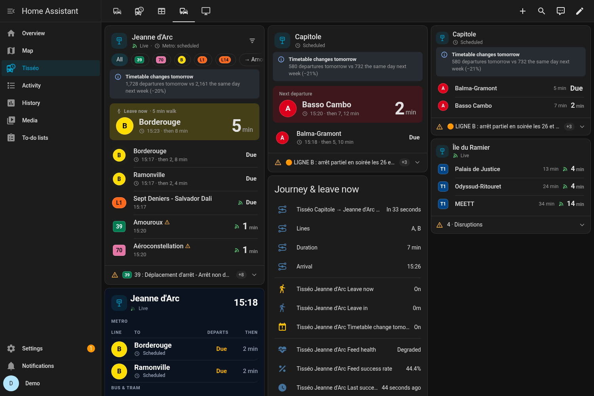
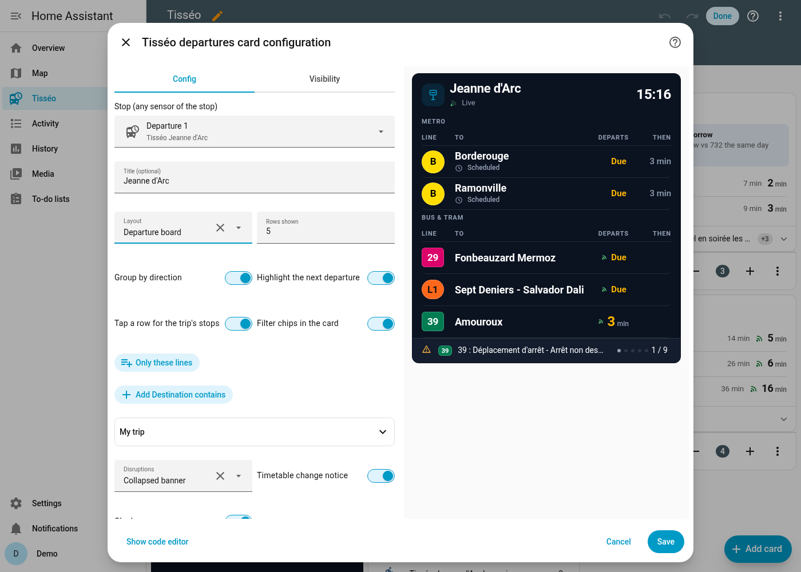

Live departures
Countdowns tick every second. A live icon appears only for real-time data, and delays only from 90 s. Departures are grouped by direction, and a big block tells you when to leave.
Bring the Toulouse network into Home Assistant: live departures, disruptions, journeys with up to two transfers, a "leave now" helper, VélôToulouse bikes and park-and-ride capacity, plus an animated dashboard card. Open data only: no API key, no account.

Real dashboard on the test instance: countdowns, live icons, a "leave now" block, a departure board and journey sensors.
One integration for stops, journeys, bikes and park-and-ride, and a card that feels native in Home Assistant.

Countdowns tick every second. A live icon appears only for real-time data, and delays only from 90 s. Departures are grouped by direction, and a big block tells you when to leave.

A dark station-style board with separate metro and bus/tram panels and paged disruptions. A compact layout is also available.

Tap a departure to see every stop of the trip with its scheduled and live times. This also works for extra trips that exist only in the live feed.

No bus in the next 3 hours? The card says when the next one leaves, even if that is Monday morning.

It follows your theme, dark mode and 12/24 h setting. Badge shapes differ by mode and colours meet AA contrast. Visual editor in English and French.

Set up everything from the UI: search a stop by name or code, pick one nearby, or build a journey. The card is registered automatically.
tisseo_disruption and tisseo_delay events, with 3 notification blueprints.Public feeds only. The timetable is indexed locally, so lookups are instant and work even when the live feed drops out.
Requires Home Assistant 2025.1 or newer.
https://github.com/TurbulenceDeterministe/tisseo-ha, category Integration.custom_components/tisseo into <config>/custom_components/.| Entry type | What you do |
|---|---|
| Stop – search | Type a name (capitole), a GTFS id (stop_area:SA_1715) or a stop code. Pick the whole stop area or a platform, and optionally some lines. |
| Stop – nearby | Pick from the 10 nearest stops (within 5 km) of your Home Assistant home location. |
| Journey | Pick an origin and a destination. Direct trips plus one or two transfers (minimum 3 min by default). If nothing leaves within 3 h, the next service is shown (later: true). |
| VélôToulouse | Pick from the 15 nearest stations, with live bikes and docks. |
| Park-and-ride | Tisséo P+R car parks by distance, with their capacity. |
Stop options: line filter · number of sensors · poll interval · network-wide alerts · walking time and buffer for leave-now · delay event threshold · optional Tisséo API key.
Registered automatically, so there is no resource to add. Pick Tisséo departures in the card picker, or use YAML:
type: custom:tisseo-departures-card
entity: sensor.tisseo_jeanne_d_arc_departure_1 # any sensor of the stop
layout: default # default | compact | board| Option | Default | Description |
|---|---|---|
entity | — | Any sensor of a Tisséo stop (required). |
title | stop name | Card title. |
layout | default | default, compact or board. |
max_departures | 6 | Rows shown (directions, when grouped). |
group | true | One row per line + direction, with "then" times. |
hero | auto | Big "next departure" block; auto = default layout only. |
hero_line | — | Pin the hero to one direction, e.g. "B|Borderouge". |
hero_min_minutes | 2 | Skip departures leaving sooner than this in the hero. |
leave_entity | auto | The stop's "leave in" sensor. |
alerts | banner | banner, count or off. |
timetable_notice | true | Notice when tomorrow's timetable differs. |
show_filters | false | Line / direction chips, saved per card in this browser. |
filter_lines / filter_destinations | — | Fixed filters, e.g. [B, L1] / [Ramonville]. |
trip_dialog | true | Tap a row to open the trip's stops. |
show_clock | false | Clock in the header. |
badge_contrast | auto | auto (AA contrast) or brand (GTFS colours as they are). |
board_theme | dark | dark or auto (follow Home Assistant). |
Tisséo's public real-time feed (GTFS-RT) has no metro trip updates. The official API documentation (21/05/2025) says its real time covers only bus and tram, so a key would not change this. Metro times come from the timetable, and the card labels them "scheduled". Metro disruptions do come through as alerts.
Tisséo publishes its timetables (GTFS) and real time (GTFS-RT) as open data under ODbL, and VélôToulouse publishes GBFS. None of these feeds needs a key. If Tisséo gave you a personal API v2 key, you can add it as an extra source. The integration never ships, extracts or reuses any key from the official app.
Some lines don't run in the evening or on Sundays. The card then shows the next scheduled departure, which is also available as the next_service attribute.
From about 7 MB (one quiet stop) to about 26 MB (several busy hubs). Once a journey is configured it is about 32–35 MB, because the trunk lines are added. It rebuilds automatically when you add stops or upgrade.
No. Only the capacity is open data. The live figures exist only on tisseo.fr, which is bot-protected, so they are not used.
At most two transfers. The middle leg must be a metro, tram, Linéo or Téléo line, and transfers happen within the same stop area (no walking between different stops).
Timetables and real-time data © Tisséo, under the Open Database License (ODbL), via transport.data.gouv.fr and data.toulouse-metropole.fr. VélôToulouse data © JCDecaux. P+R data © Toulouse Métropole (Licence Ouverte v2.0). Code under the MIT licence.
Unofficial project. It is not affiliated with, endorsed by or supported by Tisséo, Tisséo Collectivités, Toulouse Métropole or JCDecaux. "Tisséo" and the line names and colours belong to their owners. For official information, see tisseo.fr.